Next: Conservation of Energy (compressible Up: The Finite Volume Method Previous: Rhie-Chow interpolation Contents
Let us denote the velocity calculated from the momentum equation by
 . Thus:
. Thus:
and
| 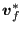 | ![$\displaystyle = \overline{\boldsymbol{v} }^*_f - \overline{D}_f \left [ \frac{p...
... \overline{\nabla p}_f^{(m-1)} \cdot \boldsymbol{j}_F \right ] \boldsymbol{j}_f$](img1833.png) |
(594) |
| (595) |
The resulting mass flow 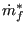 through face f corresponds to:
| 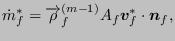 | (596) |
where
 is obtained from
is obtained from
| 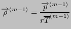 | (597) |
while at the element centers we have (e.g. at P):
| 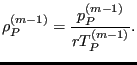 | (598) |
Now, mass conservation requires:
 |
(599) |
which after solving the conservation of momentum equation in iteration  of
increment
of
increment  reads (integrated form):
reads (integrated form):
 |
(600) |
which is probably not satisfied. Therefore, a correction of the density, pressure, velocity and mass flow is proposed in the form:
| 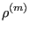 | (601) | |
| 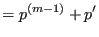 | (602) | |
| 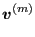 | (603) | |
| 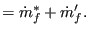 | (604) |
Assume that 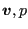 also satisfy the conservation of momentum equation just solved, i.e.
and
leading to (subtract Equation (593) from Equation (605))
| (607) |
and (subtract Equation (595) from Equation (606))
| 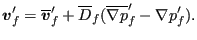 | (608) |
With the corrected values the conservation of mass reads:
 |
(609) |
Now, 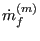 satisfies:
| 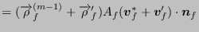 | (610) | |
| 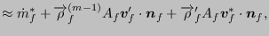 | (611) |
neglecting second order terms. Since
| 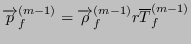 | (612) |
we also have (the temperature T is kept constant)
| (613) |
and the last term can be replaced by
| 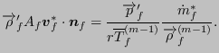 | (614) |
The second term in Equation (611) amounts to:
| (615) |
Since
we have
| (617) |
and (taking the mean)
and the second term now reads:
leading to the folowing form for the conservation of mass:
 |
||
 |
(620) |
or
The first term is transient-like, the second convection-like and the third
diffusion-like. The fourth term containing the
 -terms is usually neglected (this corresponds to the
so-called SIMPLE algorithm - Semi-Implicit Method for Pressure-Linked
Equations [66]).
-terms is usually neglected (this corresponds to the
so-called SIMPLE algorithm - Semi-Implicit Method for Pressure-Linked
Equations [66]).
For the convective interpolation of the pressure correction the upwind difference scheme is always used.
The normal gradient in the diffusion term can be written as:
Therefore, Equation (621) has to be solved in an iterative way: in
the first subiteration only the first term in Equation (622) is taken
into account, in the following subiterations the first term in Equation
(622) is based on the actual subiteration, the second term is calculated
based on the  solution from the previous subiteration. This can be
expressed as follows:
solution from the previous subiteration. This can be
expressed as follows:
where  is the subiteration number. Usually, only 2
subiterations are needed.
is the subiteration number. Usually, only 2
subiterations are needed.
The solution of the conservation of mass yields  at the element
centers. Also here, underrelaxation is applied by taking only about 20 % of
at the element
centers. Also here, underrelaxation is applied by taking only about 20 % of
 into account. This is typical for the SIMPLE algorithm and is due to the
neglection of the
into account. This is typical for the SIMPLE algorithm and is due to the
neglection of the
 -terms hereby increasing the risk of
divergence. After determining
-terms hereby increasing the risk of
divergence. After determining  the other corrections satisfy:
the other corrections satisfy:
| (624) |
| 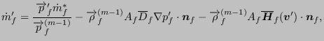 | (625) |
(the
 -terms are usually neglected)
-terms are usually neglected)
| (626) |
| 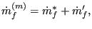 | (627) |
and
| 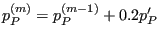 | (628) |
 and
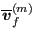 are obtained from
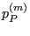 and
and
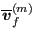 are obtained from
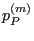 and
 with the usual procedures.
with the usual procedures.
Also here the boundary conditions are of utmost importance. The convection boundary conditions amount to:
The diffusion boundary conditions satisfy:
 |
(629) |
In the SIMPLE algorithm the
 -terms were neglected. This leads
to slower convergence and the need to introduce unterrelaxation in order to
avoid divergence. Since the publication of the SIMPLE scheme by Patankar and
Spalding [66] several other schemes have been proposed to
improve the convergence. One of them is the SIMPLEC scheme, which stands for
SIMPLE-Consistent [83]. Instead of neglecting the
-terms were neglected. This leads
to slower convergence and the need to introduce unterrelaxation in order to
avoid divergence. Since the publication of the SIMPLE scheme by Patankar and
Spalding [66] several other schemes have been proposed to
improve the convergence. One of them is the SIMPLEC scheme, which stands for
SIMPLE-Consistent [83]. Instead of neglecting the
 -terms it is
assumed that the velocity correction in
-terms it is
assumed that the velocity correction in  is the weighted mean of the
correction in its neighbors. The weighting coefficients are taken from the
momentum equation. Mathematically this can be written as:
is the weighted mean of the
correction in its neighbors. The weighting coefficients are taken from the
momentum equation. Mathematically this can be written as:
 |
(630) |
Now, the left hand side of Equation (616) can be written as:
 |
||
 |
||
| (631) |
Now, Equation (616) can be replaced by:
| (632) |
where
| (633) |
In a similar way, Equation (618) amounts to:
| (634) |
and Equation (619) is replaced by:
| 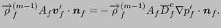 | (635) |
Therefore, in the SIMPLEC scheme, the fourth term in (621) is taken
into account by replacing
 in the third term by
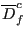. The SIMPLEC scheme usually converges faster, especially
since no underrelaxation is needed any more.
in the third term by
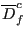. The SIMPLEC scheme usually converges faster, especially
since no underrelaxation is needed any more.